The deck from class, as a page: every slide, its notes and its diagrams. A faithful copy — you do not need the .pptx file.
Did the Change Really Help?
- A/B testing: is the change real, or is it chance?
APPLICATIONS OF MATHEMATICS IN INDUSTRY Module 5 — Statistics, Stakeholder Communication & Light Deployment · Session S25 · 2 hours Module 5 begins: statistics used in industry, in simple words
The problem: launch it, or was it chance?
- A shopping app changes its checkout screen. It adds a one-tap UPI button.
- Half the users see the old screen. The other half see the new screen.
- After one week, the new screen looks a little better. A few more people finished paying.
- One person says, 'Good, launch it.' Another person asks, 'Is this real, or did it happen by chance this week?'
The main idea of today, in one picture
- Every number goes up and down a little. This is random variation.
- Even two same screens will not give exactly the same result.
- So assume the change did nothing. Chance still gives gaps: small gaps often, big gaps rarely.
- Now place our result here. In the middle: normal. Far at the end: a real change.
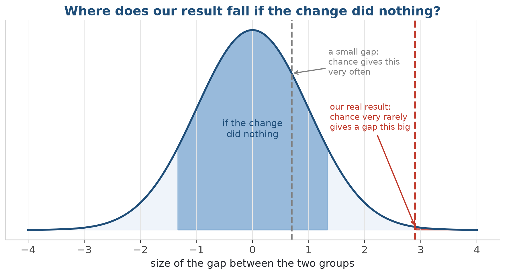
Assume the change did nothing. Can chance alone give a gap as big as ours?
The right question is not 'Did B do better this week?' The right question is 'If the change did nothing, how often would chance give a gap this big?' That number is the p-value.
The three questions every manager asks
What we'll cover
- 1 The problem, and the main idea (done: that was the big picture)
- 2 A/B testing: the question every product team asks
- 3 The steps of a test, and the p-value in simple words
- 4 The two ways to be wrong, and how many users we need
- 5 Choose the right test; report how big the change is, not only yes or no
- 6 After the A/B test: cause, a wrong sample, control charts
- 7 Lab: analyse a real A/B test from start to end
1 · The A/B test, as companies use it
What is an A/B test?
- Half the users see the OLD screen (A). The other half see the NEW screen (B).
- Each user goes to A or B at RANDOM, like a coin toss. So both groups have the same mix of people.
- Measure ONE number for each group. Choose this number before you start.
- Then ask: is B really better, or is the gap only by chance?
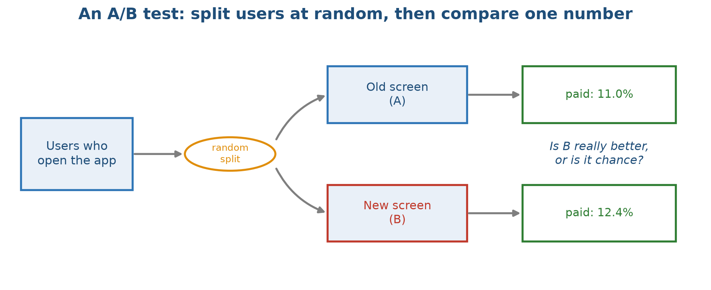
A random split makes the two groups alike. Then we compare one number.
A/B testing in Indian companies
2 · The steps of a test, and the p-value
Two claims
- Claim 1: there is NO real difference. B is the same as A. Any gap is by chance. (This is called the 'null hypothesis'.)
- Claim 2: there IS a real difference. B really changes the number.
- We start by assuming Claim 1 is true. It is like a court: a person is innocent until proven guilty.
- Then we ask: if Claim 1 is true, how rare is the data we got?
The steps of a test, in order
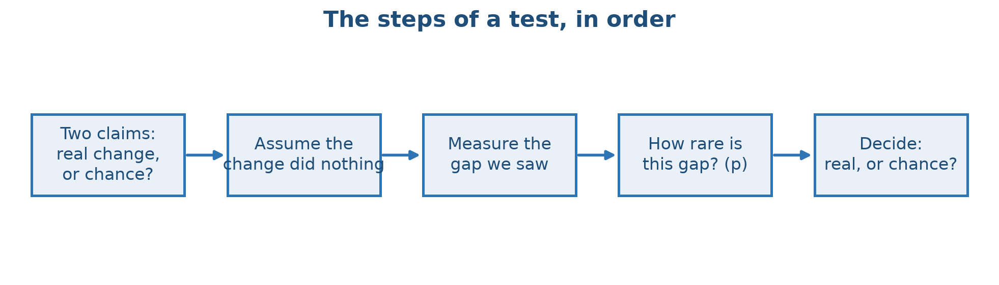
Write the two claims, assume the change did nothing, measure how rare our gap is, then decide.
The p-value: how rare is our result?
- The p-value answers one question: if the change did nothing, how often would chance give a result this big or bigger?
- Small p (for example, below 0.05): our result is rare if the change did nothing. So the change probably did something.
- Large p: our result is normal. There is no strong evidence of a real change.
- 0.05 is a common choice, not a rule of nature. Choose your level BEFORE you see the data.
What a p-value is, and what it is NOT
- A p-value IS
- 'If the change did nothing, how often would chance give a result this big?'
- A measure of how rare our result is
- Calculated by assuming the change did nothing
- A signal to look closer, used with good judgement
- A p-value is NOT
- The chance that the change did nothing
- The chance that we made a mistake
- A measure of how BIG the change is
- Proof of anything by itself
Run the two-proportion z-test on A vs B
- p = 0.0004 is much smaller than 0.05. If A and B were really the same, a gap this big would be very rare.
CODE from statsmodels.stats.proportion import proportions_ztest # 871 of 8000 users paid in A; 1016 of 8000 in B successes = np.array([871, 1016]) totals = np.array([8000, 8000]) # the standard A/B test: is the gap real, or chance? z_stat, p_value = proportions_ztest(successes, totals) print("z-statistic:", round(z_stat, 3)) print("p-value :", round(p_value, 4)) OUTPUT ▸ z-statistic: -3.554 p-value : 0.0004
3 · The two ways to be wrong, and how many users we need
- Real change vs random variation, false alarms, and missed changes
Compare the gap with the random variation
- We compare our gap with the normal random variation.
- The middle shows the gaps we get if the change did nothing.
- Our result is far out. The red area is the p-value.
- More users give less random variation, so a clearer answer.
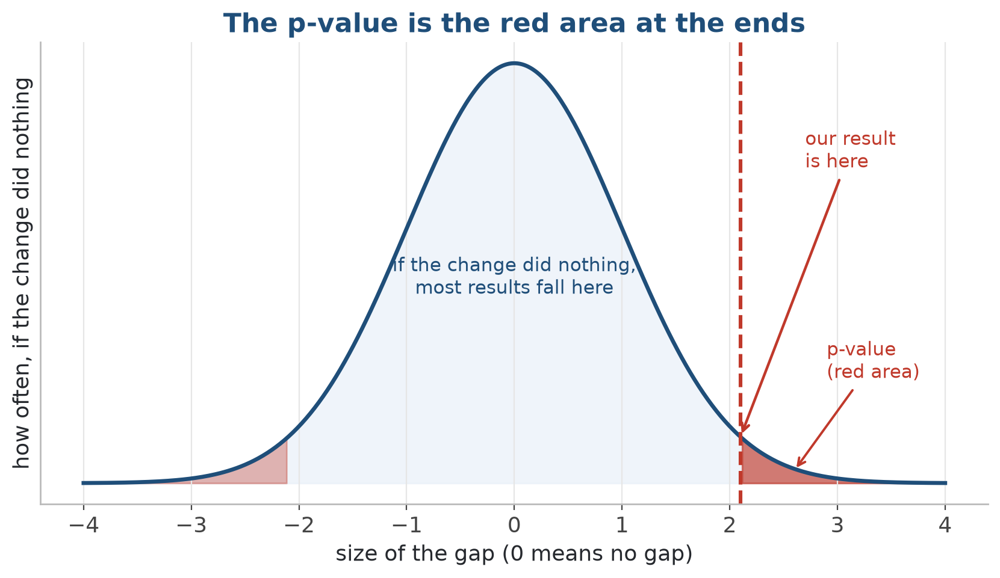
If the change did nothing, most gaps fall near the middle. Our gap is far out at the end.
Two ways to be wrong
- False alarm (Type I error): we say it worked, but nothing changed. We keep this at 5%.
- Missed effect (Type II error): there was a real gain, but we did not see it.
- Moving the decision line reduces one mistake and increases the other.
- More users move the bells apart. Then BOTH mistakes become smaller.
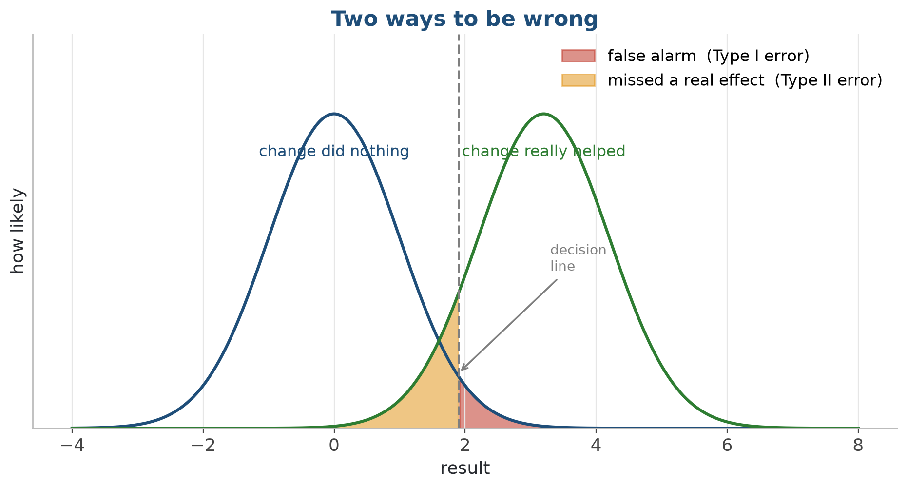
Red is a false alarm (left bell). Amber is a missed real effect (right bell). Both depend on where we draw the decision line.
How many users do we need? (statistical power)
- Power = the chance that we CATCH a real effect, when it exists.
- With low power, a 'no result' tells us nothing.
- The thing we can control is the number of users.
- The usual plan: catch a real effect 80% of the time.
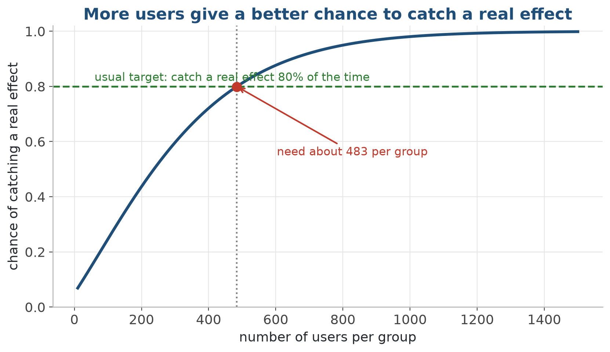
For a given effect, the chance of catching it goes up as the groups get bigger.
Calculate the users needed to catch the gain
- Give the effect worth catching and the 80% target. The calculator gives the sample size: 167 users in each group here.
CODE from statsmodels.stats.power import TTestIndPower calc = TTestIndPower() # the gain worth catching, divided by the normal spread effect_size = (11.8 - 11.0) / 2.6 # for 80% power at the 5% level, how big must each group be? n = calc.solve_power(effect_size=effect_size, power=0.80, alpha=0.05, alternative="two-sided") print("users needed PER GROUP:", int(np.ceil(n))) print("total across A and B :", 2 * int(np.ceil(n))) OUTPUT ▸ users needed PER GROUP: 167 total across A and B : 334
4 · Choose the right test
Choose the test from the type of data
- The right test depends on what we compare, and what kind of number it is.
- Two averages (minutes, rupees) → t-test.
- Two yes/no rates (paid or not paid) → chi-square test.
- Three or more screens at the same time → ANOVA.
- A few very large values, or very little data → a rank-based test.
t-test: comparing two averages
- Use it when the number is an average.
- It compares the average of B with the average of A.
- It assumes the data is roughly bell-shaped.
- If the spreads are different, use Welch's version.
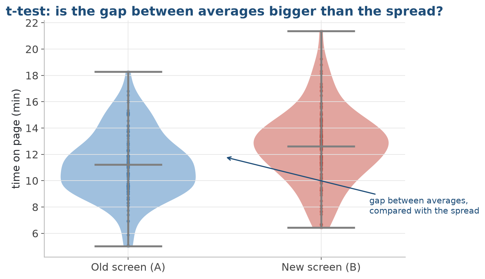
Is the gap between the two averages bigger than the normal spread inside each group?
Compare two averages with a t-test
- The gap between averages is much bigger than the spread inside the groups. p = 0.0006, so the difference is real.
CODE np.random.seed(0) # "time on page" for 120 users in each group group_A = np.random.normal(11.0, 2.6, size=120) group_B = np.random.normal(12.6, 2.6, size=120) # ttest_ind compares the averages of two separate groups t_stat, p_value = stats.ttest_ind(group_A, group_B, equal_var=False) print("t-statistic:", round(t_stat, 3)) print("p-value :", round(p_value, 4)) OUTPUT ▸ t-statistic: -3.457 p-value : 0.0006
Chi-square test: comparing two yes/no rates
- Use it for rates or percentages.
- It counts paid vs not paid, for each screen.
- It compares the counts we got with the counts we expect.
- In code: one line, scipy's chi2_contingency on the 2x2 table.
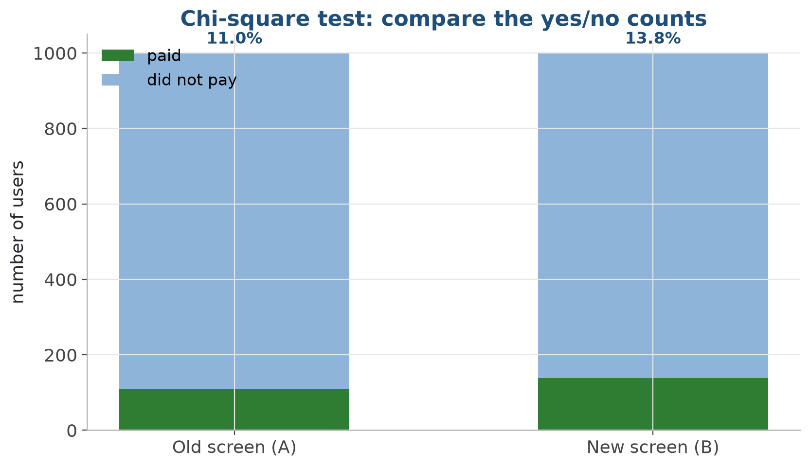
Paying is a yes/no event. We compare how many users paid and how many did not.
ANOVA: comparing three or more screens
- Use it for 3 or more groups (A, B, C…): one test, not many.
- It compares the gap between groups with the spread inside groups.
- A small p says 'some group is different', but not which one.
- Same test for 3 machine settings, 3 fertilisers, 3 treatments.
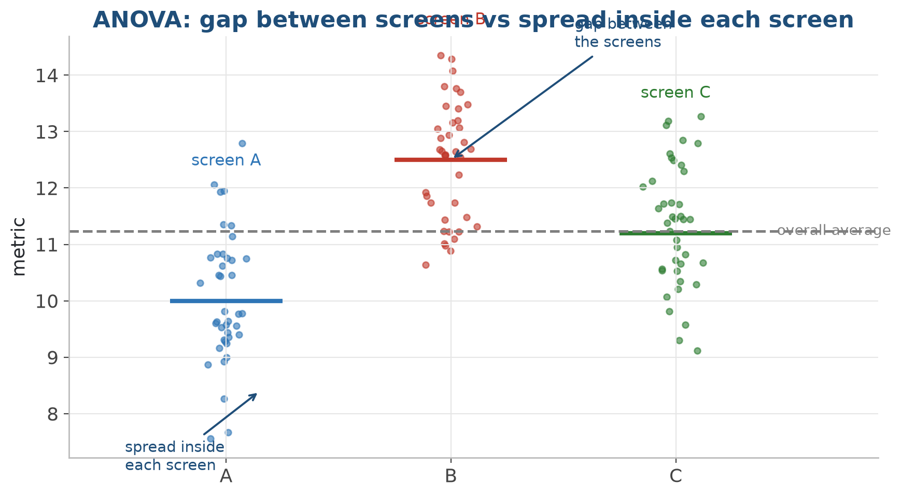
Is the gap BETWEEN screens big compared with the spread INSIDE each screen?
Compare three screens at once with ANOVA
- One test for all three screens. F is big and p is close to 0, so at least one screen is really different.
CODE np.random.seed(0) # satisfaction scores: 80 users on each of three screens A = np.random.normal(7.0, 1.2, size=80) B = np.random.normal(7.1, 1.2, size=80) C = np.random.normal(7.9, 1.2, size=80) # one test for all three groups, not three separate tests F, p_value = stats.f_oneway(A, B, C) print("F-statistic:", round(F, 3)) print("p-value :", round(p_value, 4)) OUTPUT ▸ F-statistic: 10.373 p-value : 0.0
When the data is not bell-shaped
- The t-test and ANOVA assume the data is roughly bell-shaped. Real data is often not.
- Money spent per user is a common example. Most users spend a little. A few users spend a lot.
- Rank-based tests compare the ORDER of the values, not the values. So one very large value cannot change the result much.
- A simple rule: large, clean data → t-test. Small or uneven data → a rank-based test.
Quick reference: which test when
5 · Report the result honestly, and avoid common mistakes
Show how big the change is, not only yes or no
- A p-value gives a yes or no answer. It does not tell HOW BIG the change is.
- Better: report the size of the change AND a likely range around it. This range is called a 'confidence interval'.
- 'B increases payments by about 1.4 points. The real increase is likely between 0.3 and 2.5.' This says much more than 'p = 0.02'.
- If the likely range does not include zero, the result is significant. Both methods agree.
Show how big the change is, and how sure we are
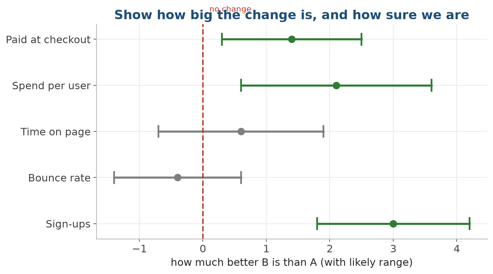
Each bar is a likely range. If a bar crosses 'no change', we cannot say it is different from chance.
Report the increase as a likely range
- The whole range (0.81 to 2.81 points) is above zero. So B is better, and the gain may be big enough to launch.
CODE from statsmodels.stats.proportion import confint_proportions_2indep # 95% confidence interval for the increase (B minus A) low, high = confint_proportions_2indep( 1016, 8000, # B: users who paid, total users 871, 8000, # A: users who paid, total users method="wald") print("95% CI for the increase (B - A):") print("from", round(low*100, 2), "to", round(high*100, 2), "points") OUTPUT ▸ 95% CI for the increase (B - A): from 0.81 to 2.81 points
Common mistakes in real A/B tests
- Checking the result every day and stopping when it looks good. (This is called 'peeking'.)
- Testing too many numbers: watch 20 numbers and one will look good only by chance.
- Mixing up 'real' and 'big enough to matter'. A real change can still be too small to be useful.
- Too few users: not enough data to catch the change we care about.
Checking every day gives false wins
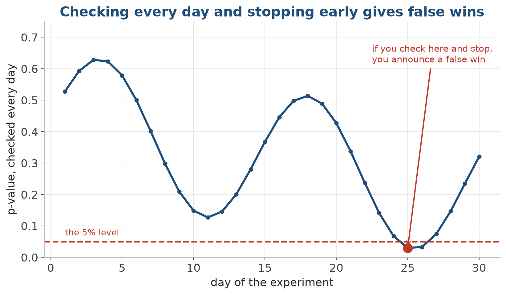
The p-value goes up and down every day. If we check often, it will fall below 0.05 at some point, only by chance.
Test many numbers and some will look good by chance
- Each check has a 5% chance of a false alarm.
- 20 checks → about 1 false winner.
- Simple fix: use a stricter level when we check many numbers.
- Or use a better correction that keeps more power.
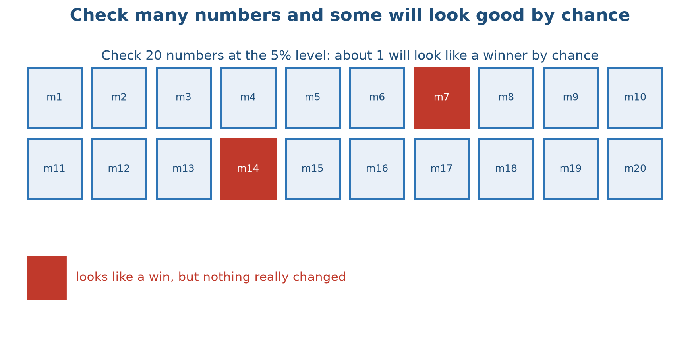
At the 5% level, if we check 20 numbers, about one will look like a winner by chance.
A hidden mistake: the wrong sample
- Everything so far assumed one thing: the people IN the test are like the people we care about.
- Survey only city users, and we miss the small towns. Test only app users, and we miss website users.
- Count only people who reply, and we miss the many unhappy people who do not reply.
- No p-value can correct a wrong sample. First check WHO is measured. Then ask if the gap is real.
Mistakes vs good practice
- Mistakes
- Checking every day until it 'works'
- Watching many numbers with no correction
- Stopping as soon as we like the result
- Calling a very small change a 'win'
- Measuring only the users we can reach quickly
- Small samples with no plan
- Good practice
- Fix the sample size first, decide once at the end
- Choose one main number; correct for the others
- Agree on when to stop before starting
- Report the size, its likely range, and if it matters
- Check that the sample is like the people we act on
- Calculate the users needed before the test starts
'Not by chance' does not mean 'big enough to matter'. Always ask both: is it real, AND is it worth acting on?
6 · After the A/B test
- Correlation vs causation, and statistics used every day in factories
Moving together does not mean one causes the other
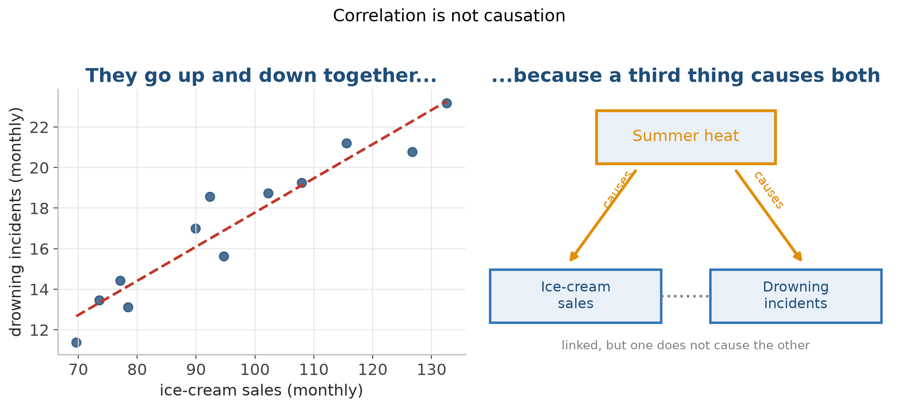
Ice-cream sales and drowning cases go up and down together, because summer heat causes both.
Why an A/B test can say 'caused'
- Data we only COLLECTED (observational data) has many hidden third causes.
- The random split is the key. Chance makes the third causes, like age, city and habits, equal in A and B.
- So if the groups still differ, only the change can explain it. The experiment can say 'caused'.
- A correlation in collected data can only say 'linked'. Use that word, or run an experiment.
The control chart: today's idea, checked every day
- A bottle-filling line, a lab test, delivery time: measured every day.
- The limits show how much normal variation can give.
- Inside the limits: do not change the process.
- Outside the limits: rare if nothing changed, so find the reason.
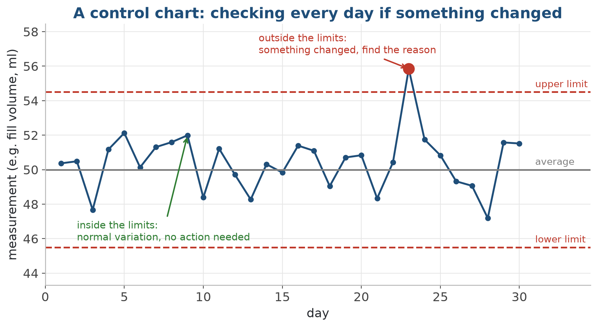
Points inside the limits are normal variation. A point outside means 'something changed, find the reason'.
7 · Lab & summary
Did the change help? Plan the size first, then test it
- Compare the two groups with a test. But calculate the sample size you need BEFORE you start the experiment.
CODE from statsmodels.stats.proportion import proportions_ztest stat, pval = proportions_ztest([conv_a, conv_b], [n_a, n_b]) print("p-value:", round(pval, 4)) # below 0.05: probably not chance from statsmodels.stats.power import TTestIndPower n = TTestIndPower().solve_power(effect_size=0.2, alpha=0.05, power=0.8) print("need per group:", int(np.ceil(n))) # decide sample size BEFORE
Lab: analyse a real A/B test from start to end
- In the lab: take a real checkout experiment, choose the right test, calculate the p-value and a likely range for the gain, check that you had enough users, and make a decision a product manager can act on.
- 1. Notebook 01: try the three common tests on small data: t-test, chi-square, ANOVA. One line of code each.
- 2. Notebook 02: load the checkout A/B data and check that the random split gave balanced groups.
- 3. Choose the test from the type of number. Then calculate the rates, the p-value, and a likely range for the increase.
- 4. Decide A or B. Keep 'not by chance' separate from 'big enough to launch'.
- 5. Notebook 03: calculate how many users you need before a future test.
- Deliverable: a notebook on GitHub: the chosen test, the p-value, a likely range for the gain, a check of users needed, and one honest sentence a product manager can act on.
How to report an A/B result in simple words
- Start with the decision and the size of the change, not the p-value.
- 'Launch B. It increases payments by about 1.4 points (likely between 0.3 and 2.5).'
- Say how many users were in the test, and that the number was enough.
- Mention the limits: a new design gets extra attention only because it is new, the test was short, or it ran in one city only.
Key takeaways
- Answer all three manager questions: is it real (p-value), how big (size + likely range), is it worth acting on (business minimum).
- p-value = if the change did nothing, how often chance gives a result this big. It is NOT the chance that nothing changed.
- There are two mistakes, false alarms and missed effects. Enough users reduce both.
- Choose the right test (t-test, chi-square, ANOVA, rank-based). The same four are used in factories, farms and hospitals.
- Avoid daily checking, testing too many numbers, and a wrong sample. No p-value can correct data from the wrong people.
- A correlation can only say 'linked'. The random split is what lets an experiment say 'caused'.
Code & further reading
- Code: github.com/bp-course/applied-maths-in-industry › S25_ab_testing/
- Notebooks for this session
- Data
- Reading
01_pick_the_right_test.ipynb 02_did_the_change_help.ipynb 03_how_many_users_do_we_need.ipynb Small made-up datasets created inside each notebook (fixed seed, no downloads) Today's idea on one page: primers/p_values_in_plain_words.md New to averages and spread? primers/what_is_a_distribution.md New to code? primers/python_in_15_minutes.md Kohavi, Tang & Xu: Trustworthy Online Controlled Experiments (the standard book) SciPy stats & statsmodels documentation StatQuest: hypothesis testing & p-values (YouTube, the simplest introduction)
Next session
- S26: Explaining a result to people who do not know statistics. We take a result like today's and write a one-page summary without using the word 'p-value'.